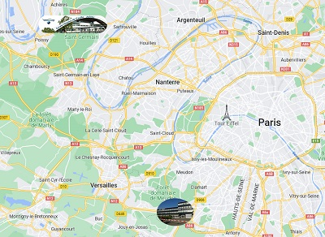

Hi, my name is
Erwan Michaud--Winkler.
I am a 19 years old student in the
IUT of Velizy
and I study web development and graphic design.
Go to About
School education :
- BUT MMI (2022-2023)
in Velizy-Villacoublay
- BUT in computer science
(2021-2022) in Velizy
- Technological baccalaureate
at Lycée Charles de Gaulle
in the town of Poissy

Vous devez expliquer ce que vous apprenez,
comment les sujets sont liés et pertinents
et quelles tâches vous pouvez accomplir
In BUT MMI, I learn :
- Graphc design
- Web development (HTML, CSS and JS)
- Ergonomics and accessibility of websites
- Hosting of internet pages
The BUT is a diploma prepared in 3 years in IUT
(University Institute of Technology). It is
for university baccalaureate of technology.
There are 24 possible specialities as education.
The MMI program stands for multimedia and internet professions.
It allows students to train in the fields of design, audiovisual
and digital project management.
It offers different courses from the second year onwards such as
communication, web development and digital creation.
Projet 1 : Proies/prédateurs (python) (avec une image ?)
Projet 2 : APLI (mettre lien github) (avec une image ?)
Mettre les logiciels que j'apprends ou appris (images)
Projet 4 :
Job 1 : Front-end web developer
What does he do ? :
Who works with him ? :
Whose responsibility is it? :
Job 2: UX/UI-designer
What does he do ? : He does user experience/interface design.
The UX aims to create emotion in the user via a narrative
in a user experience. It must make the site accessible,
create confidence, make the site easy to handle and find.
As for the UI, it takes care of the link between the machine
and the man, it organizes the graphic and textual elements
on the basis of technical standards.
Who works with him ? : There are front and back-end developers
or fullstack, web project managers, digital communication managers,
graphic designers and everything that revolves around data.
Whose responsibility is it? :
Job 3 : Audiovisual editing and post-production
What does he do ? :
Who works with him ? :
Whose responsibility is it? :
Job 4 : Photographer
What does he do? Consists in taking good photographs of a subject.
His main objective is to capture the subject of his photos as well as
possible. It requires creativity, a certain eye in order to realize the
best possible possible and a rather big patience as quality.
Who works with him ? :
Whose responsibility is it? :